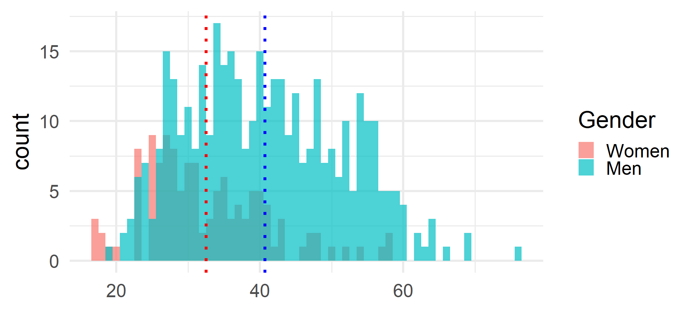
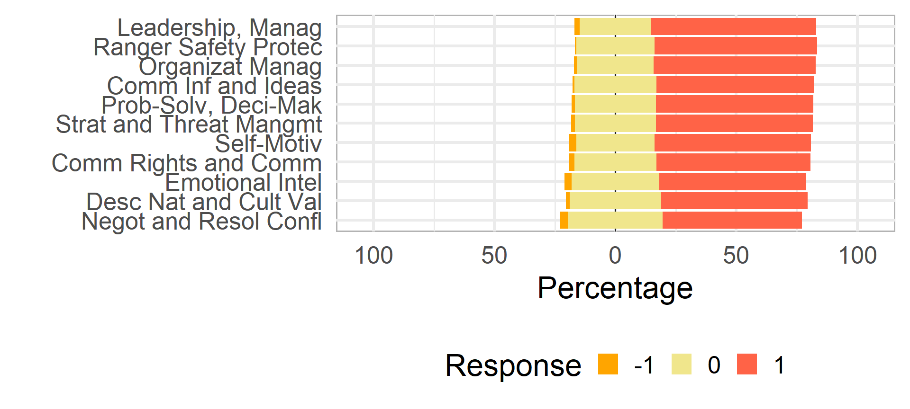
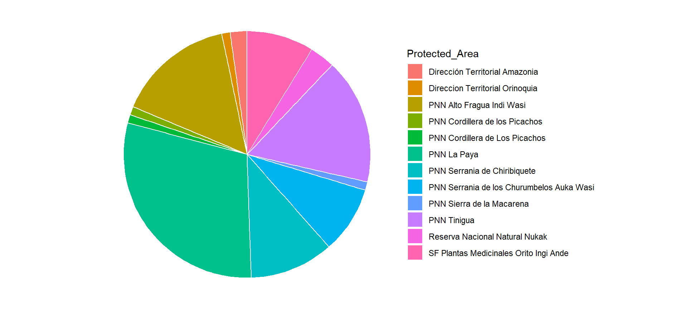
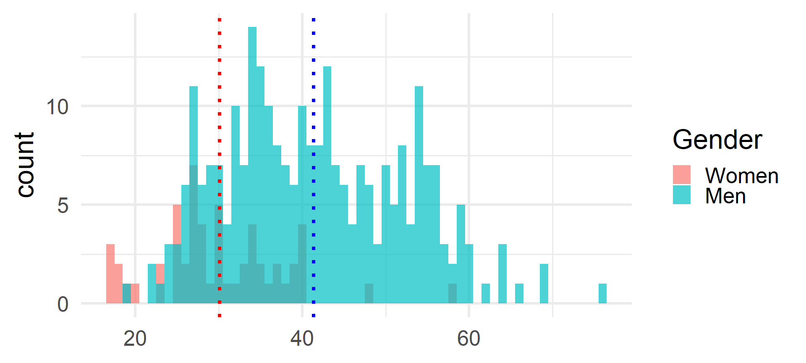

Total respondant
512
Man
76%
Woman
24%
Ages and Gender

Assesment
| Relevance | Competence | Skills |
|---|---|---|
| 0.680 | 2.068 | Leadership and Management |
| 0.639 | 2.084 | Self-Motivation |
| 0.650 | 2.061 | Problem-Solving and Decision-Making |
| 0.658 | 2.057 | Organizational Management |
| 0.598 | 2.133 | Emotional Intelligence |
| 0.633 | 2.004 | Community Rights and Communication |
| 0.658 | 2.088 | Communication of Information and Ideas |
| 0.572 | 2.053 | Negotiation and Resolution of Interpersonal Conflicts |
| 0.613 | 2.092 | Description of Natural and Cultural Values in Protected Areas |
| 0.654 | 2.059 | Strategy and Threat Management in Protected Areas |
| 0.676 | 1.967 | Ranger Safety and Protection |
Relvance of the Skill for Men

Relvance of the Skill for Women

Total
91
Man
59%
Woman
40.7%
Protected Areas


